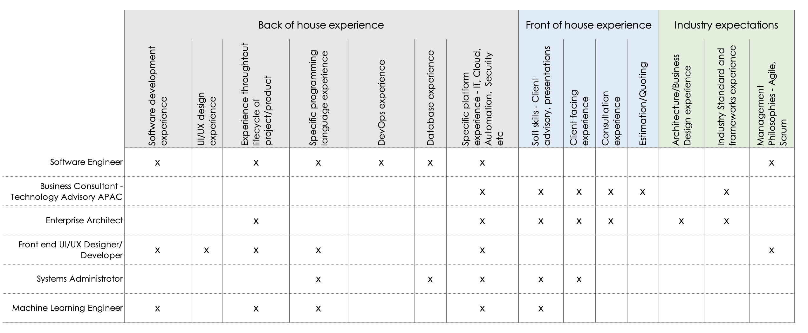
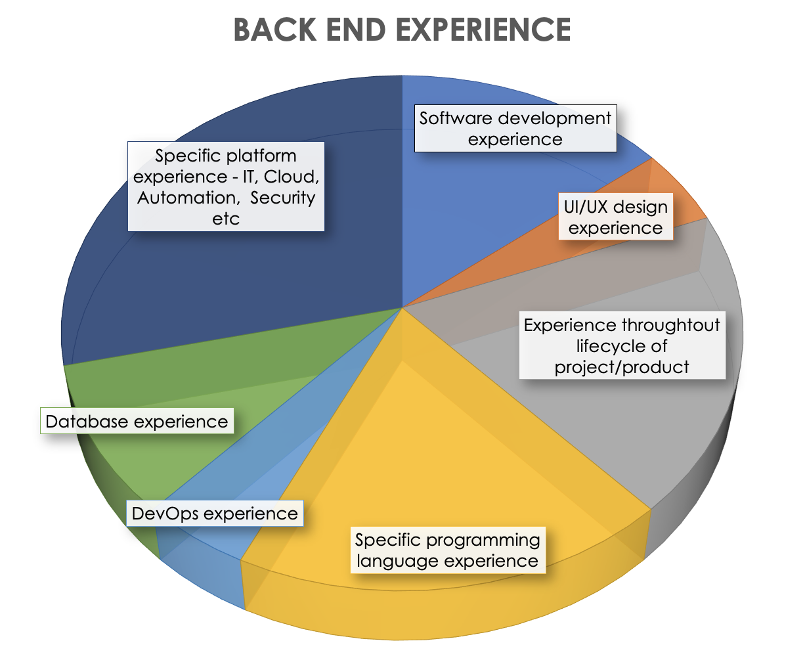
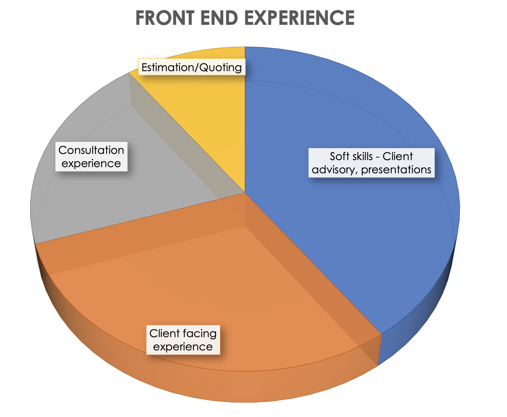
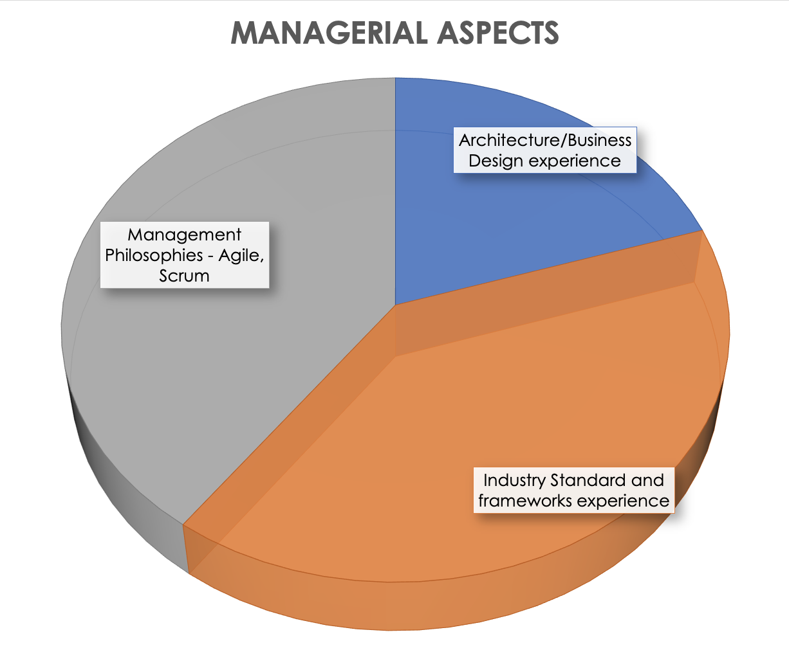

Ideal Jobs
Content
Jobs across the IT industry range in scope and speciality as it is such a vast arena with continuously changing technologies, knowledge, and client requirements. Our group selected jobs which looks to have fit into one of two categories that I will call ‘Back of house’ and ‘Front of house’. Why did we break it down to these two categories? Simply because the descriptions and perceived commonalities of each job guided us to.
The listed requirements have been pulled from each job advert supplied. It was then used to inform of a more general requirement which is much simpler than listing every specific language to program. We just wanted to know what jobs required “programming” experience to perform the task as an example. Immediately, we can see that engineering, development and systems management roles crossed off more back of house requirements. By going through the requirements in these specific jobs, we can see that they listed significant amounts of programming languages and required an overall jack of all trades understanding of all back-end tech stacks.
When it came to having a broad understanding of technology platforms, all jobs had either stated that to be the case or alluded to it. On the front of house side, these were grouped together as more of the client facing, soft skilled jobs. Only two of our jobs really covered soft skills (being able to talk to stakeholders for example), dealing with clients and consultation. It’s obvious these roles are suitable for everyone just as programming isn’t suitable to all people in tech.
The third category was more managerial based in its requirements. This did not necessarily mean defined management roles but was more of the requirement to manage projects, workloads or utilise management philosophies such as AGILE.
We don’t have too much overlap in roles which means the Wildcats could start a business and not step on each other’s toes! This could be an interesting point of discussion for our project idea as each member of the team would have a specific speciality in the group such as:
My ideal job would be software engineer. Here is a link to a specific job application that I find most suitable to my ideal. This position is incredibly appealing to me as it claims to be incredibly hands-on (“80%”), as well as the programing aspect being a major part of the role. What also is appealing to me is the flexibility of the work. It allows for flexible working hours, as well as leaning towards the strengths of the employees.
The emphasis on being “different” is also quite appealing, the concept of everyone being the same clone of each other isn’t a work environment I’d like to be a part of, having that diversity and individuality is something I am fond of as I believe if we surround ourselves with only people like us, then we cannot truly grow beyond what we are and have no potential for getting better.
Skills Required
The skills and experience required is 5+ years of professional software development, as well as experience with multiple programming languages like Java, Python, Node.js, JavaScript, and other programming languages whether they are front-end, back-end or both.
Experience in the overall lifecycle of applications from design to deployment is key, as well as the ability to work following the Agile / Scrum framework. Having experience with DevOps Tools such as bitbucket, JIRA and Confluence is also very important. In addition, being able to work with database query languages like SQL as well as databases like Oracle, Postgres and MS SQL is important.
Out of all the experience required, I only have a basic understanding of the fundamentals of Java and Python (Semi-fluent), very little experience in the lifecycle of applications and very minimal knowledge of databases and SQL / Oracle overall.
Business Consultant – Technology Advisory – APAC Melbourne, CBD and Inner Suburbs Join a global leader that provides innovative technology solutions that help customers solve design, business, and environmental challenges.
Client
Frazer Tremble has been exclusively retained on behalf of our client in their search for a Business Consultant who will sit in the APAC Technology Advisory division based here in Australia.
Our client is an international market leader in project delivery, process automation, and technology consulting services with a strong presence in the architecture, engineering, construction, and manufacturing industries.
They provide their customers with an unrivalled depth of knowledge through a portfolio of software tools to give customers the power to solve their design, business, and environmental challenges. Our clients pride themselves on their "act as one" culture where you will be empowered to make decisions and actively foster an environment where you can be authentically you.
Role
The Business Consultant role will see you guiding customers in developing their digital strategy through your unparalleled facilitation abilities and strong business acumen. You will work closely with senior leaders to develop their digital strategy and define criteria for success, assess current process and project performance, create business value justification for initiatives, and prepare to implement solutions that produce meaningful business results.
Key responsibilities:
About You
You have extensive experience in software, technology, infrastructure, or professional services consulting in a transformative or advisory setting.
You'll be able to work independently to meet deadlines with a strong ability to collaborate with cross-functional technical, sales, and project management teams.
As an industry expert in architecture, engineering, construction, or technology industries, you can communicate with a technical and non-technical audience to drive informative conversations that help guide strategic technology decisions. You will be a part of a passionate and skilled team of industry experts from multi-disciplinary backgrounds who work collaboratively across the globe.
Enterprise Architect - Melbourne/Northern Suburbs
Salary: $160,000 - 173,000 + 14% Super
The Role
As the Enterprise Architect you will contribute to the design and development of the ICT enterprise architecture supporting the business and provide the overall view of the technology landscape.
This role will align the business strategy with Technology, defining the architecture and technology standards for applications and infrastructure, analyse market trends, assessing any impact due to changes in technology and document the roadmaps.
Skills and Experience
Having a minimum 5 years’ experience as an Enterprise Architect your role will include the following elements:
Business Design
Integration and Application knowledge and experience
You will work with the program or project teams to ensure realisation of the agreed application architecture and all architecture artefacts are updated to reflect the delivered solutions. You will be involved in Solution Design Authorities reviews and creating, maintaining, and communicating EA principles, standards, and patterns.
Qualifications
Security Clearance
To be eligible to apply, you must be an Australian citizen. A Government Baseline Security Clearance is required.
Melbourne, CBD & Inner Suburbs, Collingwood
Join our Team
Our Fashion & Apparel Organisation has over 100+ years of heritage, located in Collingwood, Melbourne. We live and breathe retail, with our luxury menswear brand located in over 40 stores across Australia & New Zealand and B2B uniform brand dressing some major brands, with a focus on our people and customers.
Join our excellent work environment, that has a backbone of collaborative culture that will support your career growth and development.
Your role in our company
We are seeking an experienced Systems Administrator to own the IT function, based in our HQ in Collingwood Melbourne. This is a full-time position.
This role reports Directly into the Managing Director and a dotted line into the Finance Director, this role gives you a seat with the Extended Leadership Team.
This role acts as a trusted advisor to the Organisation and will work cross functionally with both internal HQ and our retail network, so it's crucial that you're able to communicate appropriately and effectively with staff and vendors of various skill levels and technical understanding. Aim to deliver continuous improvement in customer and employee experiences across eCommerce, in-store POS, mobile and telecommunicated and HQ ERP.
You will support activities that are essential to support our day-to-day HQ & retail operations, including developing and supporting enhanced operational processes, standards, change programs and controls for stores and ensuring stores receive clear and concise communications and updates.
Your duties & responsibilities
Your main objective is to ensure our HQ and stores are set up for success VIA system and user support, your day-to-day responsibilities will include:
About YOU, and what you bring to the Team?
To be successful for this position you need to be a people person, have capacity to juggle and prioritize an always changing environment.
You are a great all-rounder, you will have between 2-4 years of System Administrator (or similar) experience, with strong technical IT skills, a highly developed customer service ethic and a high degree of integrity and professionalism. Along with this, you need the following skills, experience, and attributes:
Our culture
The benefits of joining us
Read Before Apply
Do you have technical support experience?
Do you have experience using point of sale (POS) software?
Which of the following statements best describes your right to work in Australia?
How many years' experience do you have as a systems administrator?
Information & Communication Technology • Developers/Programmers Full Time Immediate Role - Front end UI/UX Designer/ Developer Location - Bondi, Junction
Primary Skills
Key Responsibilities
We are offering
Employer questions
Your application will include the following questions:
Verse Group - Information & Communication Technology • Developers/Programmers
$140,000 - $160,000 • Full Time
Verse Group is currently working with a product-based company that is progressing into its second phase. Being ASX listed, they are expecting a massive line of growth in the next year. You will get the chance to work on a product that is progressive, leveraging, and contemporary within artificial intelligence and computer vision.
This is your chance to work with a team that values cultural fit, they will be supportive and will help you hit those career goals. If you are a machine learning enthusiastic with all the technical knowledge down packed - this opportunity will give you a great opportunity to take your career forward.
Your Role
Why Apply
You Bring